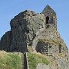

Nou rêalisit au seizième siècl'ye tch'i'n' 'tait pus pôssibl'ye dé protégi lé Vièr Châté contre les canons et tch'i' 'tait nécessaithe dé bâti un nouvieau châté dans la Baie d'la Ville sus l'Islet.
Lé travas d'la fortificâtion du rotchi c'menchit duthant la règne du Rouai Douard VI en 1550, mais la bâtithie du châté lî-même fut entreprînse pus tard souos la Reine Lîzabé I. Ch'fut l'Gouvèrneux, Messire Walter Raleigh, tchi lî donnit san nom du Châté Lîzabé.
Lé Châté dêv'loppit et d'vînt pus grand d'vant la Dgèrre Civile Angliaîche au dgiêx-septième siècl'ye, et duthant la preunmié maintchi du dgiêx-huitième siècl'ye nou-s'y construisit des bèrrexes pouor l's officièrs et les soudards.
Lé Châté Lîzabé est entouothé par la mé pouor sept heuthes sus douze, et ouaithe qué ch'sait eune d'fense ch'est eune faiblièche étout viyant qu'les troupes n'étaient pon capabl'yes dé d'fendre la Ville quand l'Pont 'tait couvèrt par la mé.
Des soudards y d'meuthaient jusqu'à 1923 quand l'Châté fut vendu ès Êtats d'Jèrri comme monûment historique - mais l's Allémands ajouôtîtent des fortificâtions duthant l'Otchupâtion.
 |
 |  |
 |
Viyiz étout: